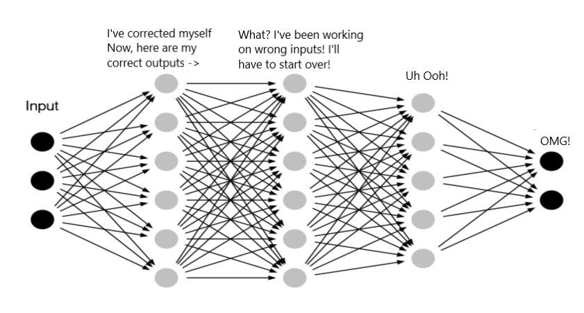
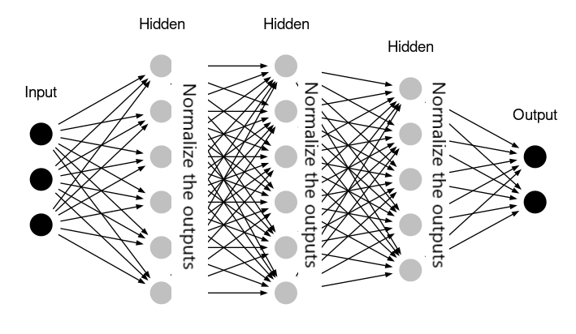
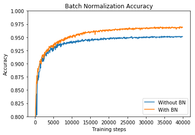
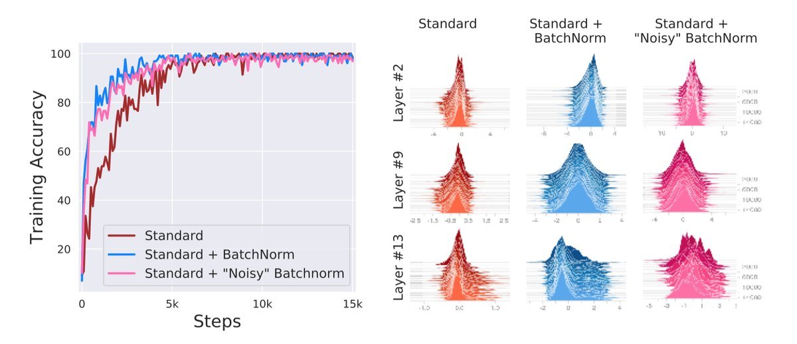
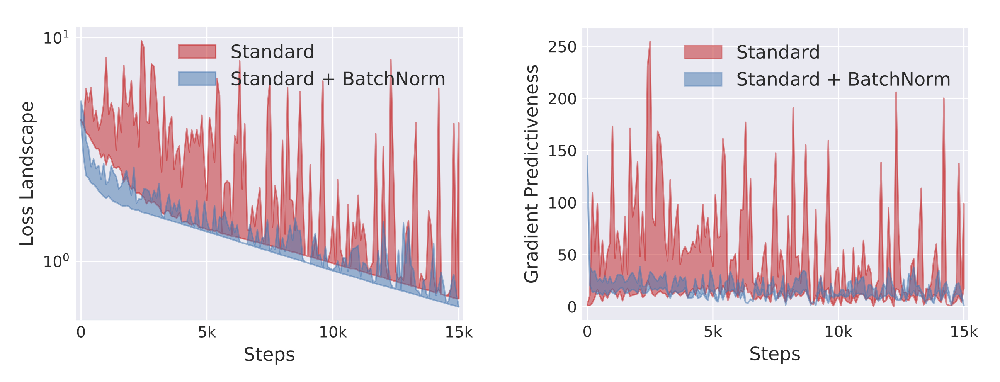

卷积神经网络之Batch-Normalization（二）：Why？
文章目录
上一篇主要介绍了Batch-Normalization（下面简称BN）是如何工作的，即在连接层和激活函数之间加了一个BN层，这些参数参与了整个网络的正向和反向传播。这篇博文主要介绍为什么BN算法可以work，内容主要参考了两篇论文，包括18年的一篇NIPS论文。
问题的提出和解决
在引入BN之前，以前的model training有一些系统性的问题，导致很多算法收敛速度都非常慢，甚至根本就不能工作，尤其在使用sigmoid激活函数时。其中一个比较著名的问题就是每层神经元是会受到它之前所有神经元影响的，因为每一层的输出都是下一层的输入，所以一个神经元输出的数据分布发生改变一定会使其他神经元跟着改变，这样相互影响的调参很容易使调参过程乱套，这个被称作Internal Covariate shift（ICS）。此外，还有其他问题，比如仿射层的输出值太大或太小，其经过sigmoid激活函数时会落在饱和区域，反向传播会有梯度消失的问题。这里先试图说明一下ICS问题及其解决方法。
Internal Covariate shift (ICS)
关于ICS，有个形象的比喻：当你有个射击目标时，如果这个目标是静止的，它就会比较容易击中；而当这个目标是在不停的移动时，它就很难被击中。深度学习的训练过程中就类似于后者：
- 训练数据被输入到神经网络时，一般会先被normalization一下，因为输入的数据的每个维度的量纲可能会不一样，通过normalization可以消除量纲不一致的问题；
- 数据经过{Wx+b}和activation后，进入hidden layer，数据集的分布（均值和标准差）就会发生变化，而且每经过一层，输出数据集的分布都会变化；
- 由于每一层都发现自己的input数据集的分布在不停的变化，而反向传播更新参数时，想要适应训练数据集的分布就是一件非常困难的事情。

如果上面的理解是正确的，那么训练过程收敛速度非常慢就很容易理解了，尤其是对于深度较深的网络（隐含层比较多）。
ICS问题的解决
虽然ICS的问题很棘手，但也不是无解的。
其中一个比较常见的解法就是减小learning rate，因为学习率一旦降低，学习训练数据集分布的过程就能够通过持续微小的调整来慢慢接近目标；但是，这也带来了一个问题，学习率太小容易使学习/训练的速度变慢，此外，还可能使学习过程陷入局部极小值。
BN算法之所以work的比较好，最主要的原因一直被认为是其解决了ICS的问题。Batch Normalization将每一层的输出都经过了“变换”，每一层的输出数据集（batch）都会重新将数据集的分布归一化到标准的分布形态上（均值为0，标准差为1）。这样一来，“目标分布” 在每一层的传递过程中变化就不会很大了，也即目标被固定住了。

下图对比了使用BN和不使用BN时，训练收敛的变化趋势，可以看到使用BN可以在更少的训练步数内达到同等的准确率，此外使用BN还可以达到更高的准确率，也即训练收敛速度更快，效果更佳。

BN算法的有效性分析
除了ICS的问题，BN算法还一并解决了深度学习训练过程中遇到的各种小问题。下面以问答的形式，说明一下几个小问题的解决。
Q1: 为什么先做BN再做activation？
其实仅仅考虑ICS的问题，先做activation再做BN也不是不可以；但是，先做BN还是有好处的，BN将仿射层的输出标准化后，数值基本分布在0附近，对于sigmoid激活函数来说，值大都落在非饱和区了，就不太会造成梯度消失的现象了。
Q2: mini-batch的大小设置多大比较合适？
mini batch的大小稍微大一点其实会比较合理，因为算法中需要使用mini-batch内的数据去估计整个样本的均值和方差，所以大一点会比较接近总体样本的分布；但是，太大又会导致training比较慢，所以，batch的大小和算力需要去权衡一下。
Q3: scale和shift参数的加入有什么作用？
scale、shift是两个独立的参数，也即和数据是没有依赖关系的，它们完全有可能将BN的作用给抵消掉，然而这恰好也是这个方法的优势，可以根据具体情况由网络自身在训练过程中来决定需不需要BN。
Q4: 训练好的模型如何使用，因为已经没有batch的概念了？
一种方法是真的去估计整个样本在每一层的输出值的均值和方差，这个计算量太大。另一种比较常用的方法是，对训练集数据中的每一个均值和方差都保留下来，最后做移动平均来估计总体样本的均值和方差。
新的理解
这是一篇投稿于NeurIPS 2018的会议论文（参考文献2），文章以新的观点阐述了BN算法的有效性。主要涉及了两个实验（公式太多，没有细看）：
在BN层之后添加Noise
在BatchNorm层之后加上一个随机噪音，噪音的分布异于BatchNorm层的输出（均值非0，反差非1），并且每次传播的时候，噪音都不一样。也就是说，在BatchNorm层之后故意加了一个ICS，结果发现训练并没有因此而明显变差（如下图粉红色所示），虽然隐含层的输出分布会随着迭代次数的增加（时间的推移）而变得不太稳定。

梯度更新前后的Loss和其梯度的变化
作者使用量化的方式定量的说明了BN算法并不能减少ICS。实际上，作者认为BN算法减少了Lipschitz常数（也即loss函数变得更加连续/光滑），使得梯度变得跟加”可预测”（如下图所式），才是BN算法有效性的关键。
这里”可预测“我的理解是表示变量的变化范围比较小，更加可控。

总结
- ICS问题的解决使深度神经网络的收敛速度变快，另外，此时的learning rate也可以设置大一些，则加快了学习的速率；
- BN的引入极大的降低了sigmoid和tanh这样的激活函数梯度消失的风险；
- 使用了Batch Normalization，初始化参数对神经网络的影响减小；
- BN算法降低了过拟合的风险，训练过程不需要太多的正则化，也可以不需要drop out了；
- 新的观点认为ICS的解决并非BN算法有效的根本原因，loss变得平滑了才是主要原因；
- 国外发表的论文还做了一个几分钟的小视频放在youtube上，我觉得国内也可以校仿一下。
Reference
- Ioffe, S., & Szegedy, C. (2015). Batch normalization: Accelerating deep network training by reducing internal covariate shift. arXiv preprint arXiv:1502.03167.
- Santurkar, S., Tsipras, D., Ilyas, A., & Madry, A. (2018). How does batch normalization help optimization?. In Advances in Neural Information Processing Systems (pp. 2488-2498).
- Batch Normalization — Speed up Neural Network Training
原文作者: Mun*
原文链接: https://kiddie92.github.io/2019/03/09/卷积神经网络之Batch-Normalization（二）：Why？/
许可协议: 知识共享署名-非商业性使用4.0国际许可协议